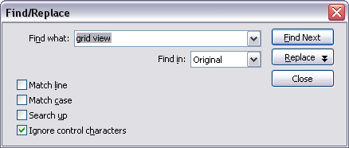
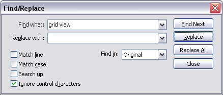

Select Find (Ctrl+F) from the main menu to display the Find/Replace dialog:

The string to search for.
Select the field(s) to search in. You can choose between Original, Translation or Both.
Specifies whether the text should match the entire line in the file or only part of it.
Specifies whether upper and lower case letters must match.
Specifies the direction of the search. Default is down.
Click the Find Next button to start the search. If a matching item is found, it is selected in the list. If no matching items can be found, a message box is displayed that reports this.
To continue a previous search, click Find Next again or select Find Next (F3) from the menu. The search will continue from the current location.
To find and also replace text, select Replace (Ctrl+H) from the menu or click the Replace button in the Find/Replace dialog. The dialog expands to display additional fields used when replacing text:

As before, type in the text to search for in Find what and then the text to replace it with in Replace with field. You can leave the replace text empty to clear the found text.
Note that the replace action is very specific about when to replace text. For example, even if you search in the Original field only, the text to find must be in the Translation field as well unless you check the Match line option or the text won't be replaced.
If Match line is enabled, any line that matches the find text exactly (taking into account the state of Match case) in either Original or Translation (based on the Find inoption), will be replaced with the replace text in it's entirety.
Click Replace All to have the program search through the entire document and replace all matching occurences of the find text with the replace text.
To close the dialog, click Close or press the Escape key. Your settings and previous searches is stored until the next time you open the dialog. The program remembers the 25 most recent search and replace texts.